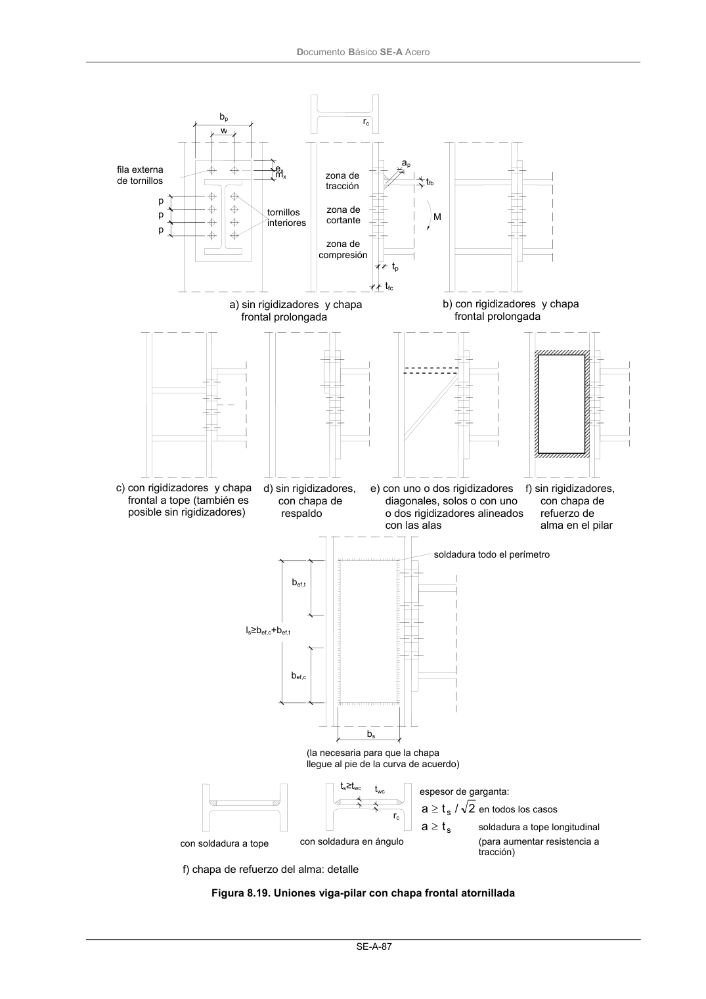
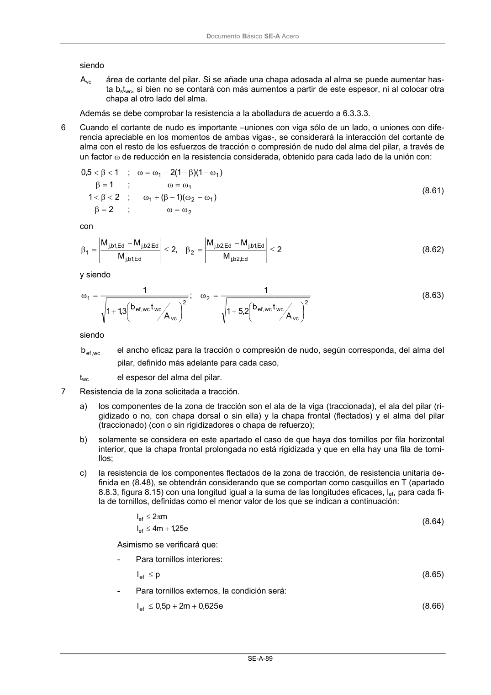
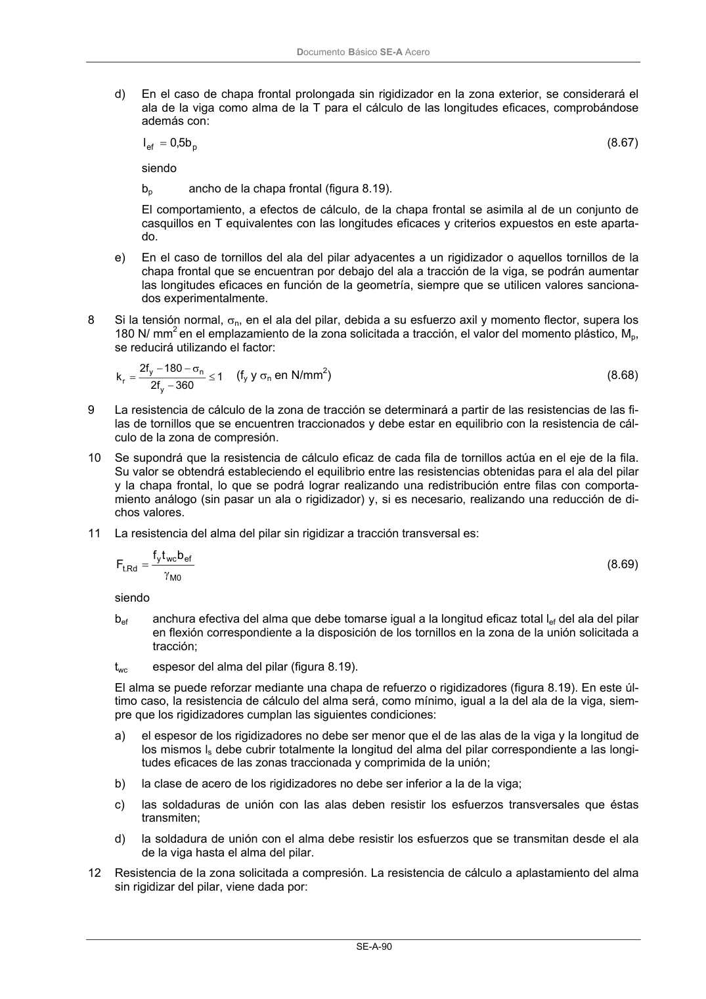
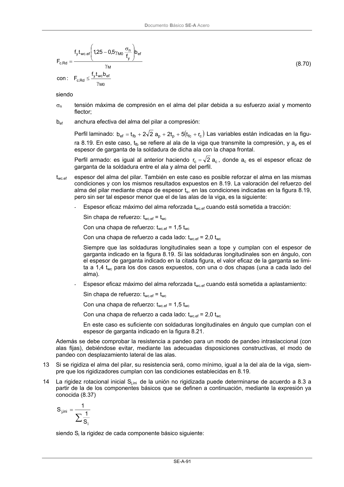

DB-SE-A · 8.8.6 Uniones de viga y pilar atornilladas con chapa frontal · versión 2007-10-23 · capa oficial
Formatos: JSON compacto · Markdown · PDF fuente
Ámbito del documento · texto del ámbito · documento y tablas
ID técnico a0131 · PDF pág. 88-93 · jerarquía no validada por persona · contrastado con el literal de la página 88 (candidato tipográfico); no validado por persona · padre: a0120
8.8.6 Uniones de viga y pilar atornilladas con chapa frontal 1 La comprobación de la resistencia a flexión de una unión viga-pilar de las representadas en la figu- ra 8.19.a) (comprobación que también es de aplicación a cada uno de las dos partes que forman uniones análogas con vigas a ambos lados del pilar) exige: soporte a) soporte b) viga soporte c) viga soporte d) DocumentoBásico SE-A Acero SE-A-87 Figura 8.19. Uniones viga-pilar con chapa frontal atornillada soldadura todo el perímetro (la necesaria para que la chapa llegue al pie de la curva de acuerdo) bs ls≥bef,c+bef,t bef,t bef,c ts≥twc twc con soldadura en ángulo f) chapa de refuerzo del alma: detalle espesor de garganta: 2 / t a s ≥ en todos los casos st a≥ soldadura a tope longitudinal (para aumentar resistencia a tracción) rc con soldadura a tope b) con rigidizadores y chapa frontal prolongada fila externa de tornillos p p p bp w ex mx tornillos interiores zona de tracción zona de cortante zona de compresión ap tfb M tfc tp rc c) con rigidizadores y chapa frontal a tope (también es posible sin rigidizadores) d) sin rigidizadores, con chapa de respaldo e) con uno o dos rigidizadores diagonales, solos o con uno o dos rigidizadores alineados con las alas f) sin rigidizadores, con chapa de refuerzo de alma en el pilar a) sin rigidizadores y chapa frontal prolongada DocumentoBásico SE-A Acero SE-A-88 Rd , wp Ed , wp Rd Ed V V M M ≤ ≤ (8.58) siendo MRd momento resistente de cálculo de la unión viga pilar; MEd momento de cálculo aplicado. Vwp,Rd resistencia a cortante de nudo del alma del pilar Vwp,Ed cortante de nudo aplicado en el alma del pilar 2 La capacidad resistente a momento depende de la resistencia de los componentes de la unión, que se agrupan en tres zonas críticas: de tracción, de compresión y de cortante. El momento resistente de cálculo será la suma de los valores de cálculo de las resistencias eficaces de cada fila de torni- llos traccionados, por su distancia al centro de la zona de compresión. 3 En el caso de que la resistencia eficaz de la zona de compresión resultase menor a la suma de las resistencias eficaces de las filas de tornillos traccionados, en la determinación de la capacidad re- sistente se considerará reducida la resistencia eficaz de los tornillos en la proporción precisa para no superarla. 4 El esfuerzo cortante de nudo en el alma del pilar se obtiene considerando aisladamente dicha re- gión del alma, y equilibrando a través de ésta tanto cortantes como diferencias en esfuerzos nor- males de las piezas que acometen al nudo, en sus valores correspondientes al recuadro que encie- rra al nudo, definido por los ejes de las almas de tales piezas. En el caso de igual canto y solución de nudo en ambas vigas (fig. 8.20) la expresión resultante es: 2 V V z M M V Ed , 2 c Ed ,1 c Ed , 2 b Ed ,1 b Ed , wp − − − = (8.59) con los significados y signos positivos definidos en la citada figura. z es el brazo de palanca global correspondiente a la unión. Figura 8.20 Unión (soldada o atornillada) y cortante de nudo 5 La capacidad resistente frente a esfuerzo cortante del alma, no rigidizada, del pilar, Vwp.Rd es: 0 M vc y Rd . wp 3 A f 9,0 V γ = (8.60) Nj,c2,Ed Mj,c2,Ed Nj,b1,Ed Nj,b2,Ed Nj,c1,Ed Mj,c1,Ed Mj,b1,Ed Mj,b2,Ed Vj,c2,Ed Vj,c1,Ed Vj,b2,Ed Vj,b1,Ed Nb1,Ed Mb1,Ed Vb1,Ed Nb2,Ed Mb2,Ed Vb2,Ed Nc2,Ed Mc2,Ed Vc2,Ed Mc1,Ed Vc1,Ed Nc1,Ed Vwp,Ed Vwp,Ed z/zc zc z zc a) esfuerzos referidos al centro del nudo a) b) esfuerzos referidos a las caras del nudo c) cortante de nudo b) DocumentoBásico SE-A Acero SE-A-89 siendo Avc área de cortante del pilar. Si se añade una chapa adosada al alma se puede aumentar has- ta bstwc, si bien no se contará con más aumentos a partir de este espesor, ni al colocar otra chapa al otro lado del alma. Además se debe comprobar la resistencia a la abolladura de acuerdo a 6.3.3.3. 6 Cuando el cortante de nudo es importante –uniones con viga sólo de un lado, o uniones con dife- rencia apreciable en los momentos de ambas vigas-, se considerará la interacción del cortante de alma con el resto de los esfuerzos de tracción o compresión de nudo del alma del pilar, a través de un factor ω de reducción en la resistencia considerada, obtenido para cada lado de la unión con: 2 1 2 1 1 1 1 ; ) )( 1 ( ; ; ) 1 )( 1 ( 2 ; 2 2 1 1 1 5,0 ω = ω ω − ω − β + ω ω = ω ω − β − + ω = ω = β < β < = β < β < (8.61) con 2 M M M ,2 M M M Ed , 2 b,j Ed ,1 b,j Ed ,2 b,j 2 Ed ,1 b,j Ed , 2 b,j Ed ,1 b,j 1 ≤ − = β ≤ − = β (8.62) y siendo 2 vc wc wc , ef 2 2 vc wc wc , ef 1 A t b 2,5 1 1 ; A t b 3,1 1 1 + = ω + = ω (8.63) siendo wc , ef b el ancho eficaz para la tracción o compresión de nudo, según corresponda, del alma del pilar, definido más adelante para cada caso, twc el espesor del alma del pilar. 7 Resistencia de la zona solicitada a tracción. a) los componentes de la zona de tracción son el ala de la viga (traccionada), el ala del pilar (ri- gidizado o no, con chapa dorsal o sin ella) y la chapa frontal (flectados) y el alma del pilar (traccionado) (con o sin rigidizadores o chapa de refuerzo); b) solamente se considera en este apartado el caso de que haya dos tornillos por fila horizontal interior, que la chapa frontal prolongada no está rigidizada y que en ella hay una fila de torni- llos; c) la resistencia de los componentes flectados de la zona de tracción, de resistencia unitaria de- finida en (8.48), se obtendrán considerando que se comportan como casquillos en T (apartado 8.8.3, figura 8.15) con una longitud igual a la suma de las longitudes eficaces, lef, para cada fi- la de tornillos, definidas como el menor valor de los que se indican a continuación: e 25 ,1 m 4 l m 2 l ef ef + ≤ π ≤ (8.64) Asimismo se verificará que: - Para tornillos interiores: p lef≤ (8.65) - Para tornillos externos, la condición será: e 625 ,0 m 2 p 5,0 lef + + ≤ (8.66) DocumentoBásico SE-A Acero SE-A-90 d) En el caso de chapa frontal prolongada sin rigidizador en la zona exterior, se considerará el ala de la viga como alma de la T para el cálculo de las longitudes eficaces, comprobándose además con: p ef b 5,0 l = (8.67) siendo bp ancho de la chapa frontal (figura 8.19). El comportamiento, a efectos de cálculo, de la chapa frontal se asimila al de un conjunto de casquillos en T equivalentes con las longitudes eficaces y criterios expuestos en este aparta- do. e) En el caso de tornillos del ala del pilar adyacentes a un rigidizador o aquellos tornillos de la chapa frontal que se encuentran por debajo del ala a tracción de la viga, se podrán aumentar las longitudes eficaces en función de la geometría, siempre que se utilicen valores sanciona- dos experimentalmente. 8 Si la tensión normal, σn, en el ala del pilar, debida a su esfuerzo axil y momento flector, supera los 180 N/ mm2 en el emplazamiento de la zona solicitada a tracción, el valor del momento plástico, Mp, se reducirá utilizando el factor: 1 360 f 2 180 f 2 k y n y r ≤ − σ − − = (fy y σn en N/mm2) (8.68) 9 La resistencia de cálculo de la zona de tracción se determinará a partir de las resistencias de las fi- las de tornillos que se encuentren traccionados y debe estar en equilibrio con la resistencia de cál- culo de la zona de compresión. 10 Se supondrá que la resistencia de cálculo eficaz de cada fila de tornillos actúa en el eje de la fila. Su valor se obtendrá estableciendo el equilibrio entre las resistencias obtenidas para el ala del pilar y la chapa frontal, lo que se podrá lograr realizando una redistribución entre filas con comporta- miento análogo (sin pasar un ala o rigidizador) y, si es necesario, realizando una reducción de di- chos valores. 11 La resistencia del alma del pilar sin rigidizar a tracción transversal es: 0 M ef wc y Rd .t b t f F γ = (8.69) siendo bef anchura efectiva del alma que debe tomarse igual a la longitud eficaz total lef del ala del pilar en flexión correspondiente a la disposición de los tornillos en la zona de la unión solicitada a tracción; twc espesor del alma del pilar (figura 8.19). El alma se puede reforzar mediante una chapa de refuerzo o rigidizadores (figura 8.19). En este úl- timo caso, la resistencia de cálculo del alma será, como mínimo, igual a la del ala de la viga, siem- pre que los rigidizadores cumplan las siguientes condiciones: a) el espesor de los rigidizadores no debe ser menor que el de las alas de la viga y la longitud de los mismos ls debe cubrir totalmente la longitud del alma del pilar correspondiente a las longi- tudes eficaces de las zonas traccionada y comprimida de la unión; b) la clase de acero de los rigidizadores no debe ser inferior a la de la viga; c) las soldaduras de unión con las alas deben resistir los esfuerzos transversales que éstas transmiten; d) la soldadura de unión con el alma debe resistir los esfuerzos que se transmitan desde el ala de la viga hasta el alma del pilar. 12 Resistencia de la zona solicitada a compresión. La resistencia de cálculo a aplastamiento del alma sin rigidizar del pilar, viene dada por: DocumentoBásico SE-A Acero SE-A-91 0 M ef wc y Rd .c M ef y n 0 M ef . wc y Rd .c b t f F : con b f 5,0 25 ,1 t f F γ ≤ γ σ γ − = (8.70) siendo σn tensión máxima de compresión en el alma del pilar debida a su esfuerzo axial y momento flector; bef anchura efectiva del alma del pilar a compresión: Perfil laminado: ( ) c fc p p fb ef r t 5 t 2 a 2 2 t b + + + + = Las variables están indicadas en la figu- ra 8.19. En este caso, tfb se refiere al ala de la viga que transmite la compresión, y ap es el espesor de garganta de la soldadura de dicha ala con la chapa frontal. Perfil armado: es igual al anterior haciendo c c a 2 r= , donde ac es el espesor eficaz de garganta de la soldadura entre el ala y alma del perfil. twc.ef espesor del alma del pilar. También en este caso es posible reforzar el alma en las mismas condiciones y con los mismos resultados expuestos en 8.19. La valoración del refuerzo del alma del pilar mediante chapa de espesor ts, en las condiciones indicadas en la figura 8.19, pero sin ser tal espesor menor que el de las alas de la viga, es la siguiente: - Espesor eficaz máximo del alma reforzada twc.ef cuando está sometida a tracción: Sin chapa de refuerzo: twc.ef = twc Con una chapa de refuerzo: twc.ef = 1,5 twc Con una chapa de refuerzo a cada lado: twc.ef = 2,0 twc Siempre que las soldaduras longitudinales sean a tope y cumplan con el espesor de garganta indicado en la figura 8.19. Si las soldaduras longitudinales son en ángulo, con el espesor de garganta indicado en la citada figura, el valor eficaz de la garganta se limi- ta a 1,4 twc para los dos casos expuestos, con una o dos chapas (una a cada lado del alma). - Espesor eficaz máximo del alma reforzada twc.ef cuando está sometida a aplastamiento: Sin chapa de refuerzo: twc.ef = twc Con una chapa de refuerzo: twc.ef = 1,5 twc Con una chapa de refuerzo a cada lado: twc.ef = 2,0 twc En este caso es suficiente con soldaduras longitudinales en ángulo que cumplan con el espesor de garganta indicado en la figura 8.21. Además se debe comprobar la resistencia a pandeo para un modo de pandeo intraslaccional (con alas fijas), debiéndose evitar, mediante las adecuadas disposiciones constructivas, el modo de pandeo con desplazamiento lateral de las alas. 13 Si se rigidiza el alma del pilar, su resistencia será, como mínimo, igual a la del ala de la viga, siem- pre que los rigidizadores cumplan con las condiciones establecidas en 8.19. 14 La rigidez rotacional inicial Sj,ini de la unión no rigidizada puede determinarse de acuerdo a 8.3 a partir de la de los componentes básicos que se definen a continuación, mediante la expresión ya conocida (8.37)





PDF fuente redistribuible: copia fiel enlazada en esta página (SHA256 verificado).